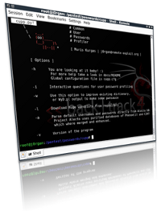

Remote-Exploit: professional security research since 2001.
wyd is a password profiling tool that extracts words/strings from supplied files and directories. It parses files according to the file-types and extracts the useful information, e.g. song titles, authors and so on from mp3's or descriptions and titles from images.
It supports the following filetypes: plain, html, php, doc, ppt, mp3, pdf, jpeg, odp/ods/odp and extracting raw strings.
Download: wyd-0.2.tar.gz
SHA-1: 45d8bceb158f0f0864be77b0869cc463f6813dc0
Psnuffle is a credentials sniffer module for the metasploit framework.
It has been removed from our website because it is integrated into the metasploit svn now.
You can get it using the command:
svn co http://metasploit.com/svn/framework3/trunk/
During the last year, rumours had come to my attention that apparently it is possible to transform a standard 30USD Bluetooth® dongle into a full-blown Bluetooth® sniffer. Thinking you absolutely need Hardware to be able to hop 79 channels 1600 times a second I was rather suspicious about these claims.
This paper is the result of my research into this area, answering the question whether it is possible or not.
Download: busting_bluetooth_myth.pdf
SHA-1: c6d6a15baa2410ded491b468c902eedea3b87b4c
People spend a lot of time preparing for effective dictionary attack. Common User Passwords Profiler (CUPP) is made to simplify this attack method that is often used as last resort in penetration testing and forensic crime investigations. A weak password might be very short or only use alphanumeric characters, making decryption simple. A weak password can also be one that is easily guessed by someone profiling the user, such as a birthday, nickname, address, name of a pet or relative, or a common word such as God, love, money or password.

Going through different combinations and algorithms, CUPP can predict specific target passwords by exploiting human vulnerabilities. In password creation, as in many aspects of life, everybody tends to the original solution, but thanks to human nature, we all tend to originality in the same way, leading to almost absolute predictability.
Common User Passwords Profiler version 3 comes with some fixes and new options!
Download: cupp-3.0.tar.gz
SHA-1: 477e8e8c060f0da2e2039dc3af1ba4b17a421cd1
Word Macro to evade disableCMD policy setting. The zip file contains a .doc example file with the macro and a .reg file to set/delete the policy setting. The macro copies the cmd.exe and patches one byte to overcome the disablecmd policy setting. Nothing fancy but working.
Download: evade_disablecmd_vba_macro.zip
SHA-1: 4558149d59a88e748a38e22ef776ecefb09df506
Word Macro to Include & Extract exe within Word. I needed to include an executable into a word macro. Unfortunately the metasploit tool exe2vba is built to integrate the exe into the macro code. That does not work on larger files because of limitation within word. My code is now extracting the exe from the word document itself. I randomized every variable and function name as well as the magic itself. The exe can be attached to existing documents as well. I will remove the code as soon as the metasploit team merges it into their codebase.
Download: exe2vba_msf_patch.tar.gz
SHA-1: 7dbd87510d6346fad5ed76df46f11a72d51cf315
Default WPA2-PSK algorithm vulnerability.
Download: Pirelli_Discus_DRG_A225_WiFi_router.pdf
SHA-1:e6bb5aca7f11ab7bca445d282acace7e38056c34
Increase Quality by Adding an Antenna. Kensington's LiquidFM is a device that transmit audio from my Ipod to my car radio.
The transmission quality suffers especially in crowded areas. By adding an antenna to it, one could enhance the signal strength and therefore get a better sound into your card radio. Checkout the video tutorial for the details.
Hotspotter passively monitors the network for probe request frames to identify the preferred networks of Windows XP clients, and will compare it to a supplied list of common hotspot network names.
If the probed network name matches a common hotspot name, Hotspotter will act as an access point to allow the client to authenticate and associate.
Download: hotspotter-0.4.tar.gz
SHA-1: c573a75dff6386e1dbb98bc3121f0daf4e297afe
Wellenreiter is a wireless network discovery and auditing tool. It is one of the easiest to use linux wireless scanning tools available. No card configuration has to be done anymore. The whole look and feel is pretty self-explainatory. It can discover networks (BSS/IBSS), and detect ESSID broadcasting or non-broadcasting networks as well as their WEP capabilities and the manufacturer information automatically.
The development of Wellenreiter has stopped.
Old Project Site: http://wellenreiter.sf.net